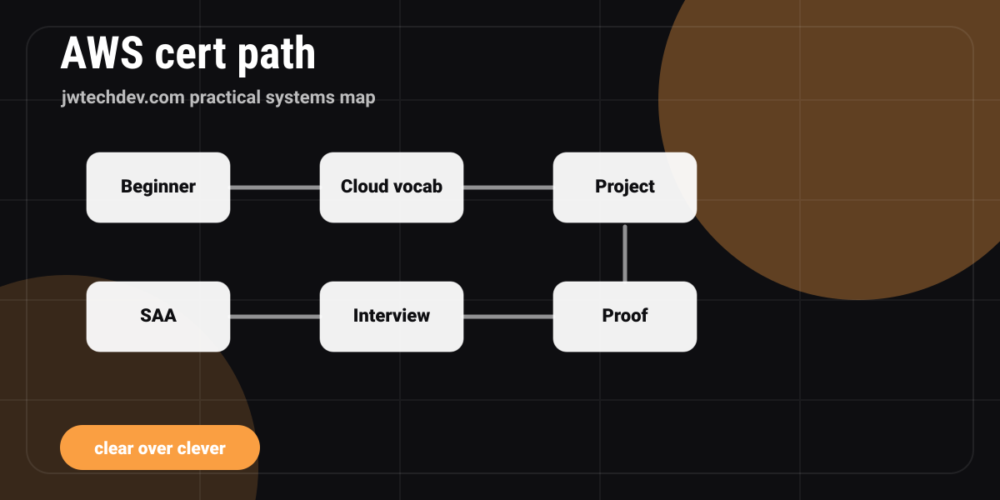

Which AWS certification should a beginner take first?
A beginner-friendly AWS certification path that explains when to start with Cloud Practitioner and when to move toward Solutions Architect Associate.

Quick answer
Most true beginners should start with AWS Certified Cloud Practitioner. If you already have IT, support, networking, systems, or software experience, study Cloud Practitioner concepts first and then move toward AWS Certified Solutions Architect - Associate.
The simple answer
If you are brand new to cloud, AWS Certified Cloud Practitioner is the cleaner first step. AWS describes Cloud Practitioner as a foundational certification for people building high-level understanding of AWS Cloud services and terminology. It is especially useful for people with no prior IT or cloud experience who are switching into cloud or need cloud literacy.
If you already work in IT, support, networking, systems, or development, you may not need to treat Cloud Practitioner as the final destination. Learn the Cloud Practitioner concepts, then aim at AWS Certified Solutions Architect - Associate when you are ready to reason about secure, resilient, high-performing, and cost-optimized architectures.
Choose by background
Career switcher
Start with Cloud Practitioner, then build one simple project so the cert becomes proof instead of trivia.
IT or support
Review Cloud Practitioner concepts, then move toward Solutions Architect Associate once architecture questions make sense.
Developer
Build while studying. Connect compute, IAM, storage, deployment, and monitoring to a small app.
Student
Use the cert for structure, but create notes, diagrams, and project writeups to show how you think.
What the exams are really testing
Cloud Practitioner is not asking you to design complex architectures. It is asking whether you understand cloud concepts, security and compliance, technology and services, billing, pricing, and support at a foundational level. AWS lists Cloud Practitioner as a 65-question, 90-minute exam on its certification page.
Solutions Architect Associate is different. AWS says the exam validates the ability to design solutions based on the AWS Well-Architected Framework. The current SAA-C03 guide organizes the exam around secure, resilient, high-performing, and cost-optimized architectures.
Do not collect courses forever
The easiest trap is to watch five courses, start three practice-test subscriptions, and never build anything. Courses can help, but they are not the finish line. Your learning rhythm should include explanation and implementation.
After every study session, write one plain-English explanation and one project note. For example: "Today I learned why IAM roles are safer than hardcoded keys for workloads." That sentence becomes interview fuel later.
A 30-day beginner rhythm
Days 1-7: learn cloud concepts, the shared responsibility model, regions, Availability Zones, and core vocabulary. Days 8-14: learn IAM, networking basics, compute, storage, and databases. Days 15-21: learn monitoring, billing, support, and common architectures. Days 22-30: take practice questions, review misses, and connect the concepts to a small project.
If you are moving toward Solutions Architect Associate, extend the rhythm with hands-on architecture practice. Spend extra time on secure design, resilient design, performance choices, and cost tradeoffs.
Which cert path sounds like you?
Pick the closest profile.
Before you schedule an exam
0 of 5 checkedSources checked
FAQ
Is Cloud Practitioner worth it?
It is worth it for true beginners, career switchers, and people who need cloud vocabulary. It is less useful if you already have strong cloud experience and need architecture proof.
Can I skip Cloud Practitioner?
Yes, some people with IT or development experience can study the concepts and move toward Solutions Architect Associate. The key is not skipping the fundamentals.
What should I build while studying?
Build a small static site, serverless contact form concept, or architecture diagram. Keep it simple enough to finish and explain.
Want the working resource?
Request the AWS Certification Study Map to choose a path, plan your first 30 days, and pair the cert with portfolio proof.
Request access